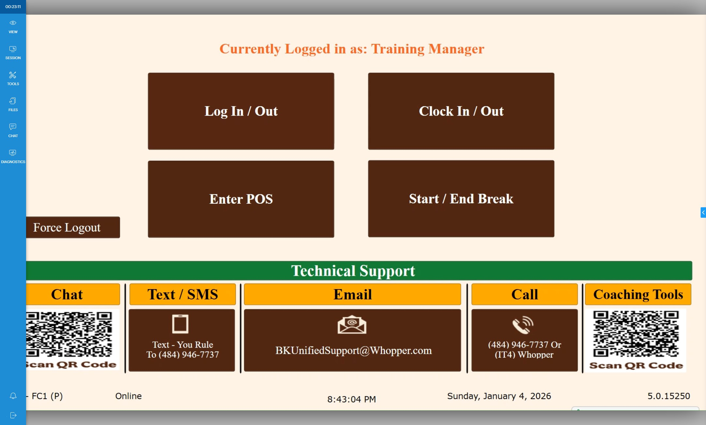
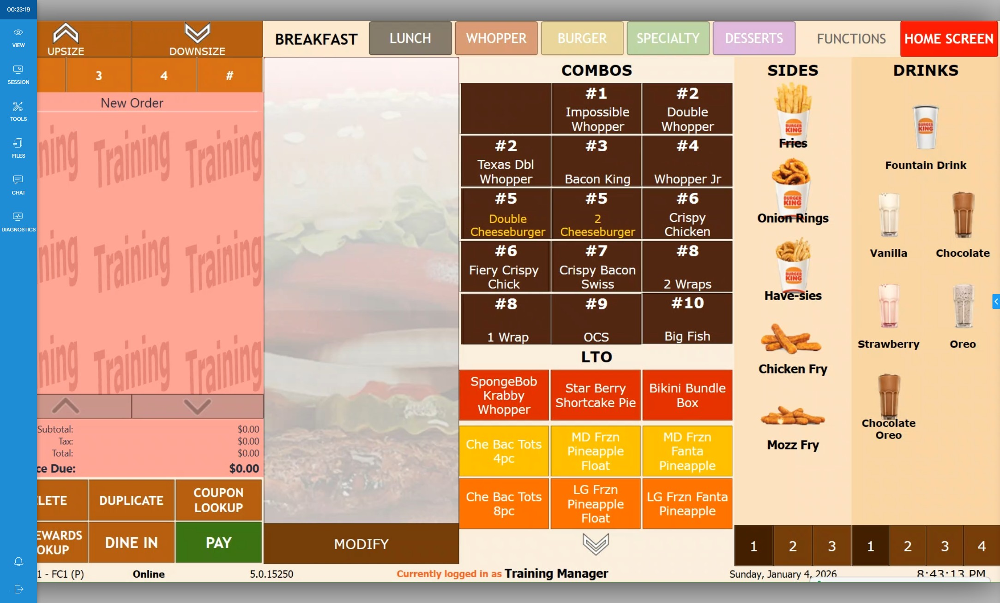
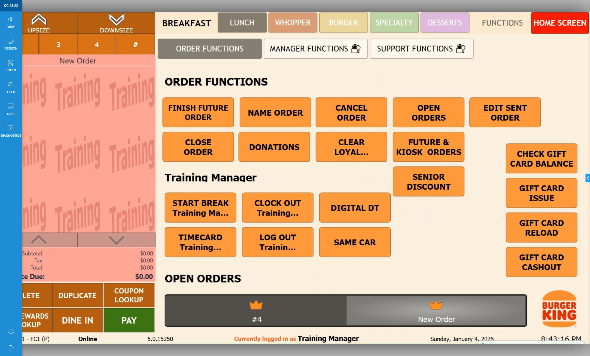
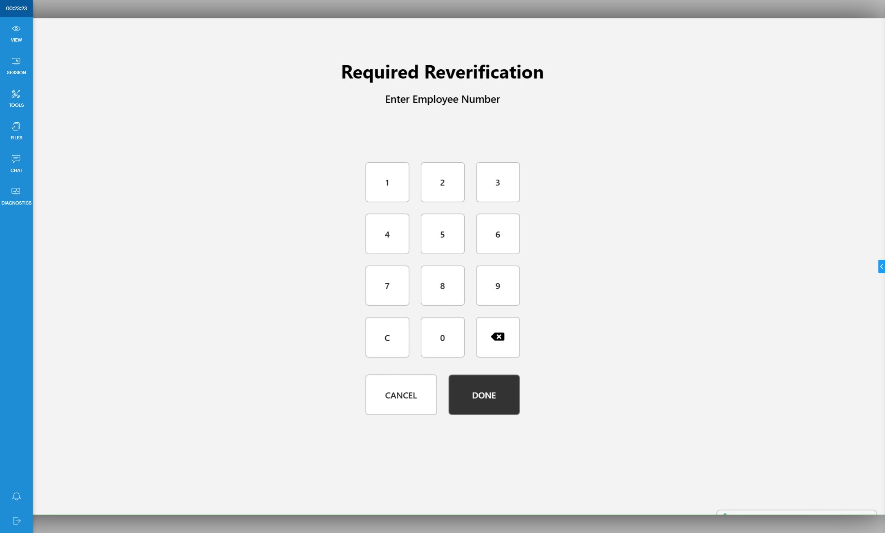
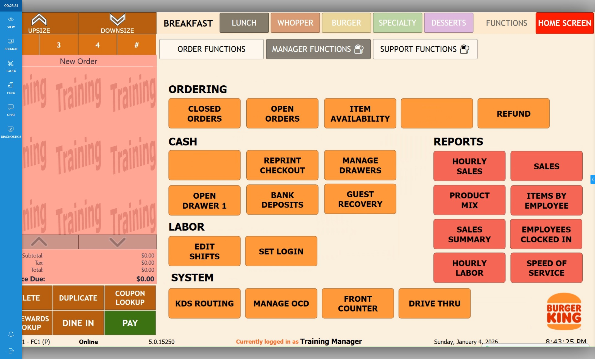
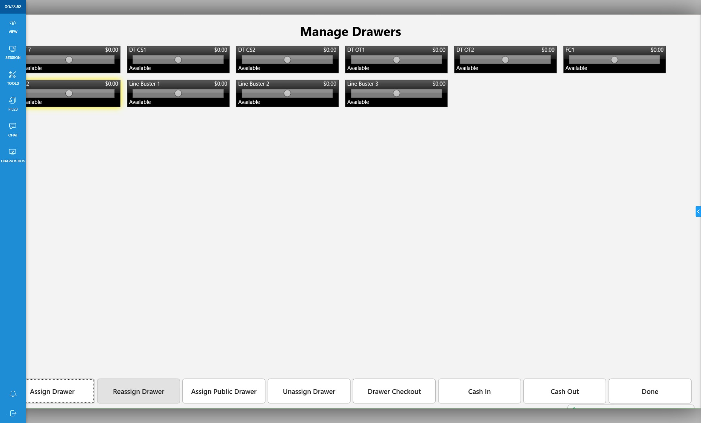
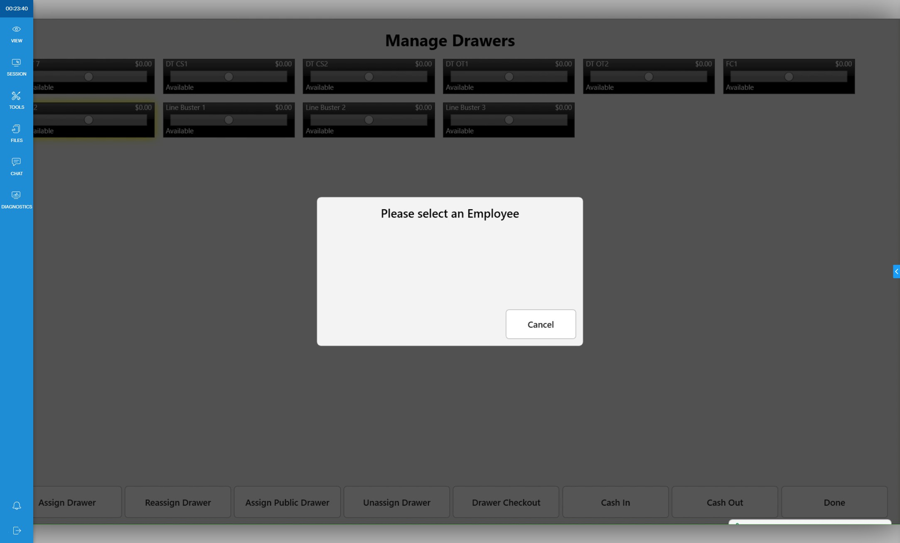
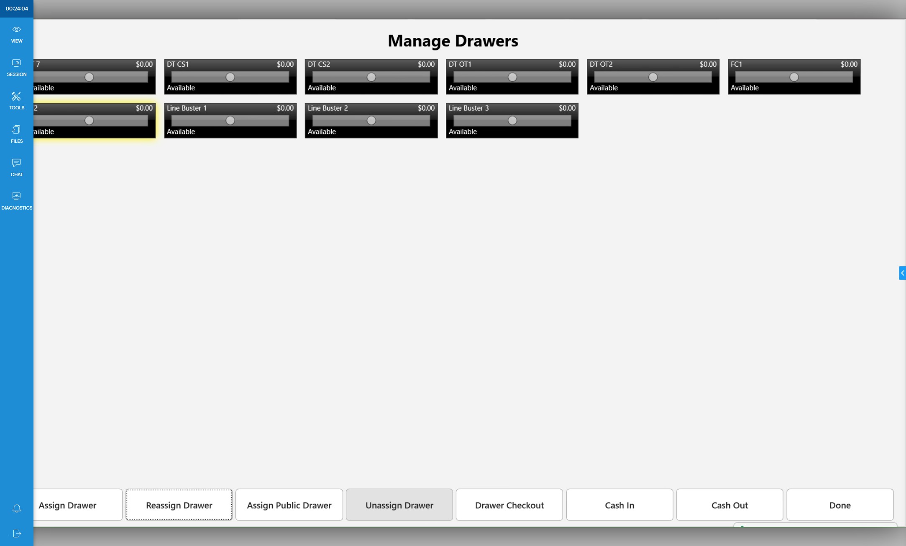
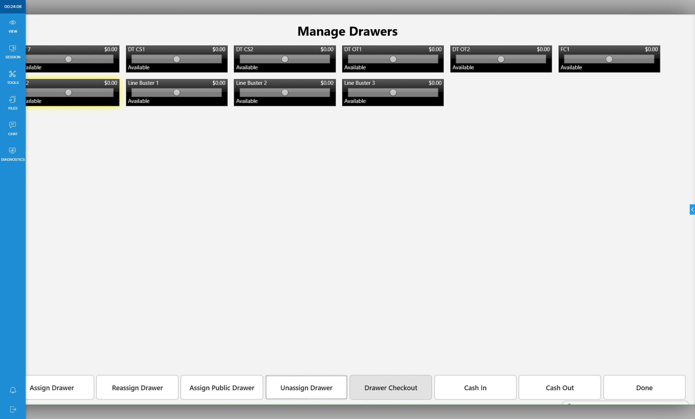

Accessing Manage Drawers
-
1Click "Enter POS"

-
2Click "Functions"

-
3Click "Manager Functions"

-
4Slide Card or Enter PIN

-
5Click "Manage Drawers"

Assign Drawer
-
6Click drawer you want to assign.
-
7Click "Assign Drawer"
-
8Select Employee.

-
Warning
Only clocked in employees can be assigned to a drawer.
Reassign Drawer
-
Warning
Reassigning a drawer does not follow cash policies. This should only be done if a drawer has been incorrectly assigned.
-
9Click drawer you want to assign.

-
10Click "Reassign Drawer"

-
11Select Employee.

-
Warning
Only clocked in employees can be assigned to a drawer.
Unassign Drawer
-
Tip
Unassigning drawer should be used if moving drawer to another location.
-
12Click the drawer you want to unassign.

-
13Click "Unassign Drawer"

Deactivate Drawer
-
14Click drawer you want to deactivate.

-
15Click "Drawer Checkout"

Count Drawer/Deposit
-
16Navigate to: Drawers/Deposits to learn how to do Drawers/Deposits